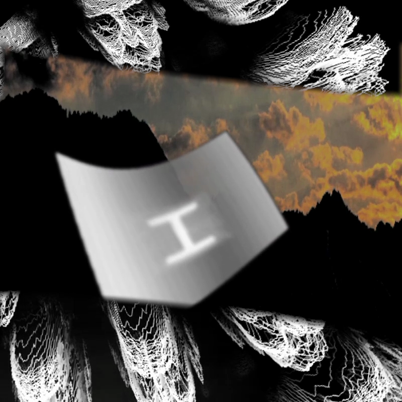

This video series comprises of three individual studies, namely Embedded Energy, Electronic Phase, and Omnidirectional Objects, with each video study exploring an inherent characteristic of the video signal that reflects the key phases of the development in the evolution of the medium’s structural, temporal and spatial capabilities. Created as part of my Thesis “The Electronic Image: An Object of Time and Energy”.
Art and Technology MA @ University of Limeirck


*Beware of YouTube Compression!*
These three studies have been shaped by the experimental processes, techniques, and philosophies of the pioneering artists working with video. The artists in question, specifically the works of Steina and Woody Vasulka, were driven by their yearning to understand the electronic signal and to formulate an electronic language. The work, in its entirety, is an investigation of the unique set of “codes” embedded within the language of the video signal, consequentially, recognising the electronic image as an object of time, energy, and its programmable building element – the waveform.
Thesis PDF

Omnidirectional Objects *Still*

Electronic Energy *Still*
Electronic Phase *Still*